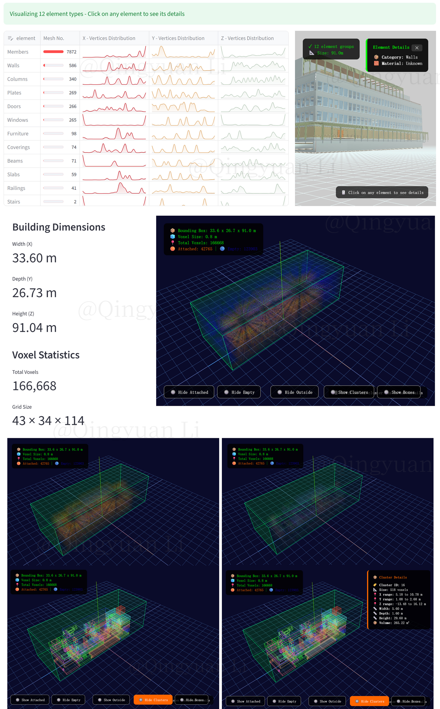
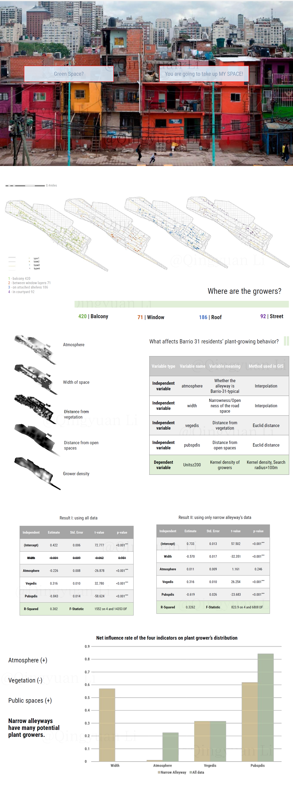
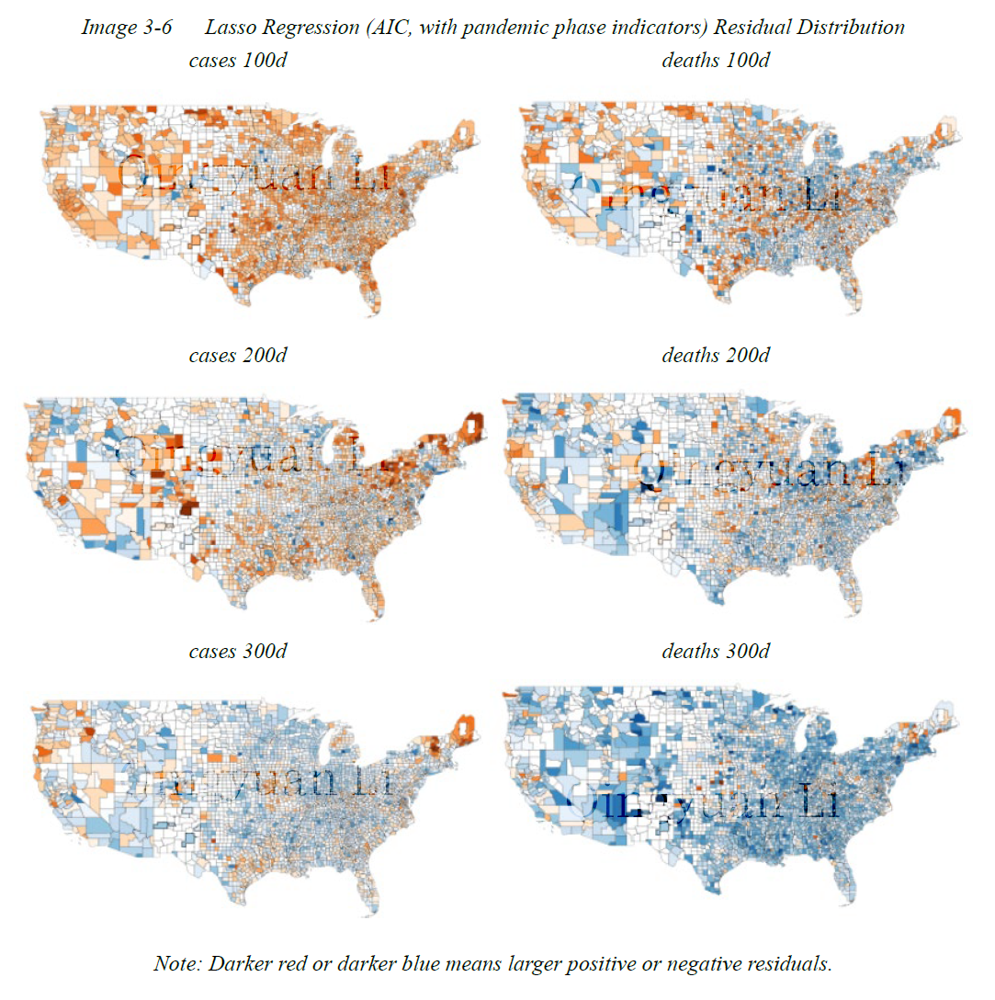

Research and Working Project Gallery - Qingyuan Li
Data Scientist | AI Engineer | Urban Planner
Working to make a better Human-Data-Machine Ecological System.
Data Scientist | AI Engineer | Urban Planner
Working to make a better Human-Data-Machine Ecological System.
I work on applied data science, smart cities and digital twins, machine learning and AI, sustainability, and privacy economics. My works focus on practical problem solving, risk tracking and system-level improvement for human good.
With an interdisciplinary background of Urban Planning, Analytics and AI, I aim to deepen my research in the application of machine learning, AI and robotics in the built environment, bridging the gap between traditional urban planning & design methods and the AI industry. I am also interested in the ethical concerns of smart city AI, which involves the detection, evaluation, and prevention of the misuse of data, media, algorithms, and IoT system of the built environment.

In my recent project "IFC Enveloper for Planners", I built a full-stack analysis web tool for building simulation data prep.
Using Streamlit, three.js, and ifcopenshell, the tool is able to digest complicated BIM models in IFC format, then calculate an optimized "envelope" model to represent rooms and basic building composition under human guidance. Voxelization, clustering, and linear programming are used for algorithm design, avoiding complicated geo-processing on too many 3D elements. The hyperparameters are interactively decided by the user, giving flexibility for the level-of-details during spatial calculation.
The purpose of the project is to simplify an IFC model with customization, so the output model can be clean and conceptualized, usable for AI decision-making, energy simulation, batch processing for pre-trained data, and other purposes.
In a community garden design project in Villa 31, a ghetto in Buenos Aires, I applied GIS and regression analysis to bridge the gap between the residents' desire and the local government's need.

Based on Google Street View, I investigated and mapped different forms of plant-growers and the shape of the narrow living space in the ghetto, modelled the relationship between the residents' plant-growing behavior and several socio-spatial factors.
With 700+ plant-grower's data points recorded, the model reached an R-squared of 0.3, explaining that narrower alleyways have more potential plant growers, and a nearby location to public spaces encourages residents to grow plants on shelves despite the lack of living space.
The study supports the site selection of the community garden, and provides the residents a public resource of growing plants in a collective space.
Dissertation: How Population Size and Density Affect the Spread of COVID-19 - A Quantitative Study of the United States at the County Level(View Paper)
Committee: Weiping Wu, Stephen Morse, Boyeong Hong

Regression Residuals: COVID-19 Cases and Deaths by Period as Explained Variables
The scholarly debate about the influence of population density on COVID-19 spread points to a question: whether it is a larger population density, or a larger size of the population, that actually accelerate the spread of the virus. To figure out an answer in the US context, proper considerations should be taken to deal with three highly-influential determinants of the shape of a COVID-19 curve: the timeline of policy interventions, the metro and non-metro division, and the phase of pandemic. To safely unmask the effect of population size and density at county level, I introduce a group of “seasonal surges” and “COVID-19 policy reaction” variables, which measure to what extent a pandemic surge happened in a season, and whether the surge was followed by effective policy intervention within the season. Besides, a group of interaction variables based on the division of metro and non-metro counties are added to address some socio-cultural differences.
To generally interpret the results, population density positively correlates with COVID-19 spread, while population negatively correlates with COVID-19 spread. However, in the early phase of pandemic, density had negative impact only in metro counties, although in later phases the effect of density no longer differed between metro and non-metro counties. The negative impact of population on COVID-19 cases are most observable in non-metro counties, while its coefficient for metro counties was evidently smaller.
Keywords: Consumer Privacy Protection, Cross-Border Flow of Digital Services, GDPR,Theoretical Mechanism
Abstract - Kept Secret
Keywords: Government Artificial Intelligence Readiness, Cross-Border Flow of Digital Services, Empirical Analysis
Abstract - Kept Secret
Abstract
The cross-border flow of R&D factors impacts a country's resource utilization efficiency and the accumulation of new productive forces. Developed nations continuously incorporate various innovation rules into regional trade agreements (RTAs) to constrain partner countries' domestic measures and cooperation methods, thereby influencing the flow of R&D factors. Using 190 RTAs signed by 74 countries between 1995 and 2019 as the sample, this article explores the innovation rule systems and development trends within RTAs, then assesses their impact on cross-border R&D factor flows. Empirical results indicate that both the establishment and deepening of innovation rules in RTAs exert a significant and robust promotional effect on R&D factor flows among members. Heterogeneity analysis reveals that provisions on intellectual property, competition policy, technology transfer, and cooperation—excluding information dissemination clauses—significantly boost cross-border R&D factor flows. Compared to North-South member pairs, innovation rules exert a more pronounced effect on cross-border R&D flows between South-South and North-North member pairs. Moderation tests indicate that technological absorption capacity amplifies the promotional effect of innovation rules on cross-border R&D flows within RTAs. Threshold effect tests reveal that the impact of innovation rules in RTAs on cross-border R&D factor flows exhibits a single threshold effect conditioned on the technology gap. This study provides academic support for China's development of innovation rule frameworks in RTA negotiations and the implementation of its innovation-driven strategy.
Keywords: Regional Trade Agreements; Innovation Rules; Cross-Border Flow of R&D Factors; Technology Absorption Capacity (View Paper)
Note: Tools and packages, interactive dashboards, models, reports and other coding projects that I worked for companies with NDA are not included in this page.


Main Courses: Machine Learning, Python, ArcGIS, Economics, Statistics, Web Development
Worked as RA for Prof.Lance Freeman on Data Scraping, Cleaning, Visualizing and Modeling, as the TA for Machine Learning Course in QMSS
Dissertation: How Population Size and Density Affect the Spread of COVID-19 - A Quantitative Study of the United States at the County Level(View Paper)
Committee: Weiping Wu, Stephen Morse, Boyeong Hong
GPA 4.67/5.0, Baosteel First Price 2018 (1st of Grade)
Attended China International Industry Fair as the only student representative of Tongji University, 2018
1st Price of Think Youth - Shanghai International Digital Creation, Innovation & Entrepreneurship Competition, 2017

Main Programming Language: Python
Pandas | Streamlit | Scikit-learn | Plotly | Matplotlib
Seaborn | ArcPy | BS4 | Selenium | Requests | Urllib3
Passed the Advanced Coding Test of Huawei
(科目一专业级考试:Python算法与程序设计)
Other Languages and Skills: SQL, C, JavaScript, R, Stata, Tableau, ETL, Pytorch,
API Pipelines, Data Scraping, ArcGIS, Adobe Suite, HTML, CSS
TOEFL: 113